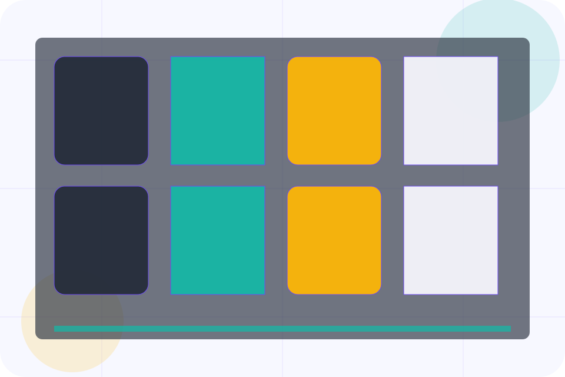
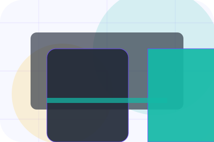
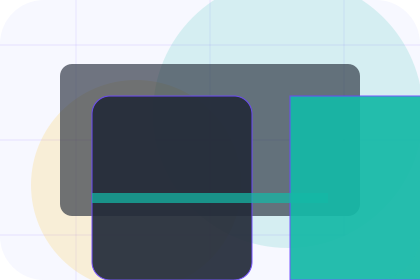
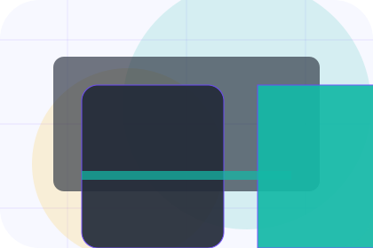
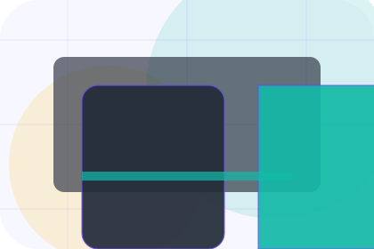
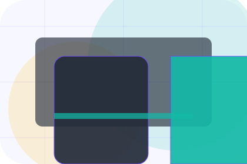
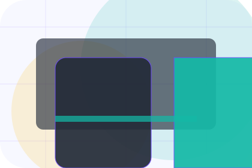
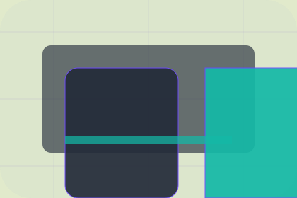

FAQ / 01
FAQ by Vow
FAQ shaped for events, weddings & experience production decisions.
FAQ opens as a clear events decision hub: what Vow offers, who it helps, why it matters, and which route to take first.
The first screen combines positioning, proof, primary action, and fast internal navigation, so people can act immediately or compare the rest of the faq route with context.
Check availabilityPlan the visitReserve with context
Event card hero
Plan the date
Select the closest route and Vow keeps the next step, proof, and follow-up expectation aligned with emotion and confidence.

FAQ / 02
Timeline
Timeline explains the operating sequence so visitors can see how the first request becomes a clear recommendation and follow-up.
The steps are written from the visitor side: what they do first, what Vow clarifies, what they receive, and how support continues.
Explore FAQVow structures timeline around start, clarify, and a clear next route so visitors can compare the block quickly before they enquire about a date.
Enquire DateFAQ / 03
Budget
Budget handles buying doubts directly so visitors can understand timing, fit, limits, and the safest next step.
Answers are short by design: enough to remove hesitation, not so much that the page turns into documentation before the visitor can act.
Explore FAQ
Question
Budget gives the page a specific angle instead of repeating the navigation label.
Answer
The rsvp event cards show what to compare, what to avoid, and what matters most for events, weddings & experience production visitors.

Next Step
The final cue points to a useful internal route so the section keeps the journey moving.
FAQ / 04
Suppliers
Suppliers handles buying doubts directly so visitors can understand timing, fit, limits, and the safest next step.
Answers are short by design: enough to remove hesitation, not so much that the page turns into documentation before the visitor can act.
Explore FAQQuestion
Suppliers gives the page a specific angle instead of repeating the navigation label.
FAQ / 05
Deposits
Deposits handles buying doubts directly so visitors can understand timing, fit, limits, and the safest next step.
Answers are short by design: enough to remove hesitation, not so much that the page turns into documentation before the visitor can act.
Explore FAQQuestion
Deposits gives the page a specific angle instead of repeating the navigation label.

Answer
The rsvp event cards show what to compare, what to avoid, and what matters most for events, weddings & experience production visitors.

Next Step
The final cue points to a useful internal route so the section keeps the journey moving.
FAQ / 06
Changes
Changes handles buying doubts directly so visitors can understand timing, fit, limits, and the safest next step.
Answers are short by design: enough to remove hesitation, not so much that the page turns into documentation before the visitor can act.
Explore FAQ- 01
Question
Changes gives the page a specific angle instead of repeating the navigation label.
- 02
Answer
The rsvp event cards show what to compare, what to avoid, and what matters most for events, weddings & experience production visitors.
- 03
Next Step
The final cue points to a useful internal route so the section keeps the journey moving.
FAQ / 07
Weather
Weather handles buying doubts directly so visitors can understand timing, fit, limits, and the safest next step.
Answers are short by design: enough to remove hesitation, not so much that the page turns into documentation before the visitor can act.
Explore FAQQuestion
Weather gives the page a specific angle instead of repeating the navigation label.
Answer
The rsvp event cards show what to compare, what to avoid, and what matters most for events, weddings & experience production visitors.
Next Step
The final cue points to a useful internal route so the section keeps the journey moving.
FAQ / 08
Guests
Guests handles buying doubts directly so visitors can understand timing, fit, limits, and the safest next step.
Answers are short by design: enough to remove hesitation, not so much that the page turns into documentation before the visitor can act.
Explore FAQ

Question
Guests gives the page a specific angle instead of repeating the navigation label.
FAQ / 09
Support
Support explains the practical scope, best-fit situations, and expected outcome so events visitors can compare options without decoding jargon.
The section keeps the offer concrete: what is included, who it is best for, what decision it supports, and which linked route gives the deeper detail.
Open ContactBest Fit
Who should use support and when it belongs in the faq journey.
What Changes
The practical benefit visitors should expect after choosing this route.
Deeper Route
Where to compare details, pricing, support, or contact options before committing.
FAQ / 10
Enquire Date
Vow closes the faq route with a clear action, a quick reminder of the value, and a low-friction way to enquire about a date.
Visitors who are ready can use the primary action. Visitors who are still comparing can scan the section links, proof, and support routes before they enquire about a date.
Enquire DateThe final block keeps the choice simple: act now, compare one more proof route, or send enough detail for a focused response.
Enquire Dateemotion and confidence
Enquire Date
An events site with elegant event cards, date filters, host proof, and RSVP-style enquiry. FAQ ends with a direct path to enquire about a date, plus enough context for visitors who still need to compare.

Enquire DateNotes
Availability, supplier pricing, venue access, and weather plans must be confirmed before contract.